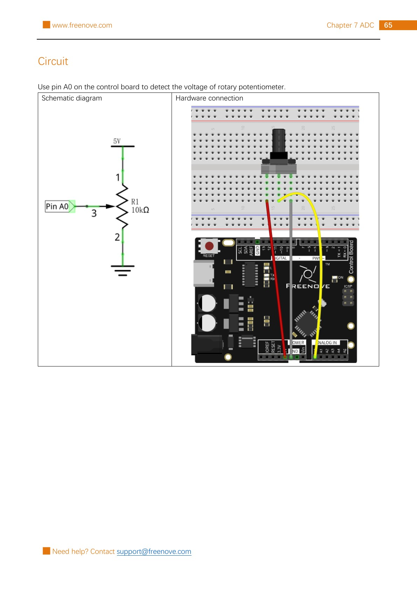

Make a rotary potentiometer act like a control knob. Arduino pin A0 will read a number from 0 to 1023, then the Serial Monitor will show both that reading and an estimated voltage.
Gather the parts
Uno-compatible board and USB cable
Breadboard
1 rotary potentiometer (10 kΩ in the kit)
3 male-to-male jumper wires
Important: this is a sensing circuit, not a motor controller. Use only the board’s 5 V and GND pins shown in the reference. Do not connect this project to a battery pack, wall power, or any higher-voltage circuit.
Build it, one check at a time
Step 1 — Study the reference circuit
Keep USB unplugged. This unchanged page from the permitted Freenove tutorial shows the Project 7.1 schematic and breadboard layout. A potentiometer has three terminals: the two outer terminals are the ends of a resistive track, and the middle terminal is the moving contact, called the wiper.

Reference image: Freenove Ultimate Starter Kit, Tutorial.pdf, Chapter 7, Project 7.1, PDF page 69 / printed page 65. Rasterized unchanged from the permitted source pack under CC BY-NC-SA 3.0.
Step 2 — Place the control knob
Push the rotary potentiometer into the breadboard so its three terminals land in separate connected rows. Compare its physical position and the wire colors with the reference image. The drawing labels terminal 1 as the 5 V end, terminal 2 as the GND end, and terminal 3 as the middle wiper that goes to A0.
Do not assume a different-looking potentiometer has the same terminal order. If your part’s legs or shaft differ from the source layout, stop and identify the middle wiper from its datasheet or the kit documentation before wiring.
Step 3 — Wire the voltage divider
Follow the reference exactly: connect potentiometer terminal 1 → 5 V; terminal 2 → GND; and the middle wiper, terminal 3 → A0. A0 does not power the knob; it only measures the wiper voltage. Trace all three wires before reconnecting USB.
Turning the shaft moves the wiper along the resistive track. That changes the voltage at A0 from near 0 V toward near 5 V. If turning clockwise makes the number move opposite to your prediction, compare the two outer-terminal connections with the source diagram before swapping anything.
Step 4 — Upload the reader
Connect USB, select your Uno-compatible board and serial port in Arduino IDE, then upload this original sketch.
What the code means:analogRead(A0) asks the Uno’s 10-bit analog-to-digital converter (ADC) for a value from 0 to 1023. The calculation 5.0 / 1023.0 turns that count into an approximate voltage when the board uses a 5 V analog reference. Serial.begin(9600) sets the speed for the Serial Monitor.
Step 5 — Watch the numbers change
Open Arduino IDE’s Serial Monitor and choose 9600 baud. Turn the knob slowly from one end to the other. You should see readings near 0 at one end and near 1023 at the other, with an estimated voltage that changes from near 0.00 V to near 5.00 V.
If the display does not change, unplug USB before moving wires, then compare the three potentiometer wires and breadboard rows with the reference image. Confirm the sketch reads A0, the monitor is set to 9600 baud, and no wire is accidentally connected to a digital pin. A value that never reaches exactly 0 or 1023 can still be normal because real parts and supplies are not perfect.
Tiny challenge
Before you upload a change, predict the estimated voltage for a raw reading of 512. Then replace delay(500) with delay(100), observe how quickly the numbers update, and restore 500. Explain why the knob wiring stays the same while the code changes how often you take a measurement.
The unchanged reference image and upstream material are from Freenove’s Ultimate Starter Kit and are used under CC BY-NC-SA 3.0. Attribution, noncommercial, and ShareAlike requirements apply.